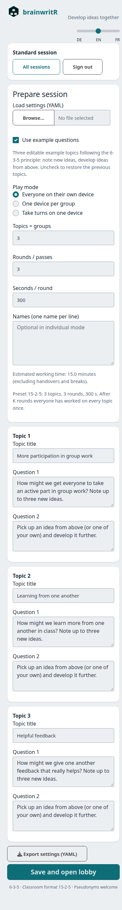
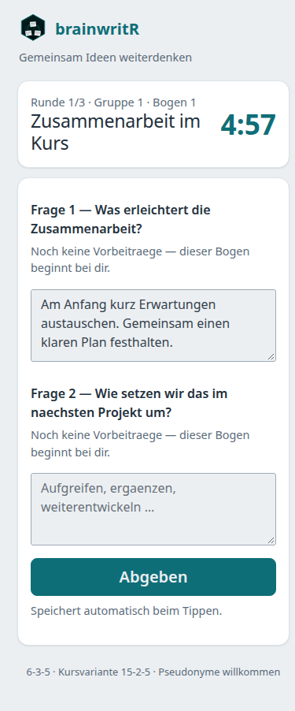
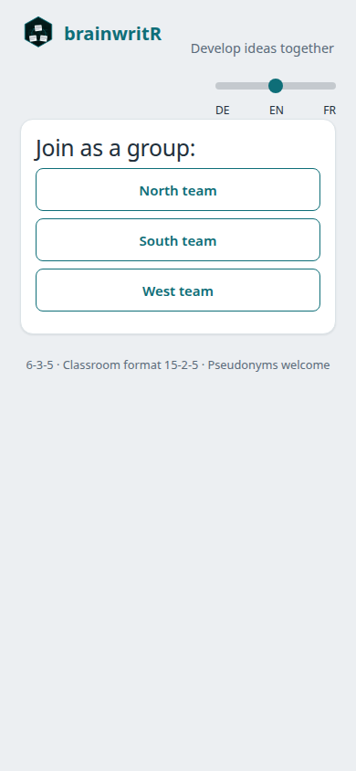
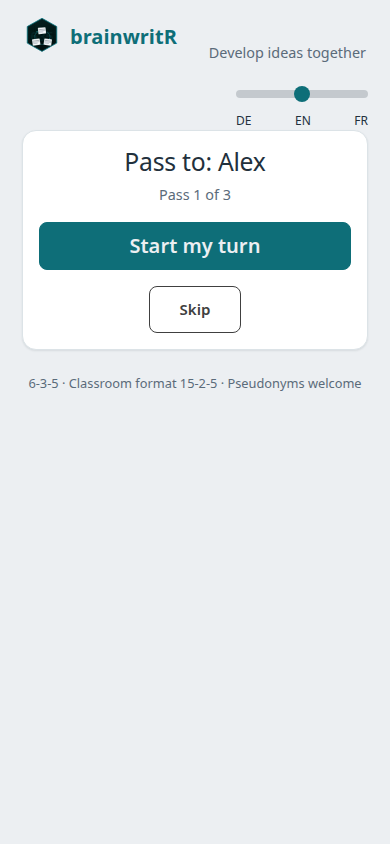
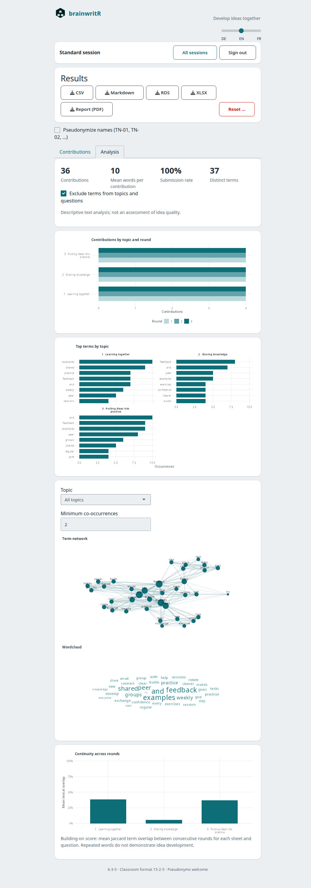

A quiet workspace for building on each other’s ideas.
brainwritR brings a classroom adaptation of Rohrbach’s 6-3-5 brainwriting method onto participants’ smartphones. A facilitator sets up topics, invites the room with a QR code, and runs timed rounds. Participants read earlier contributions on their assigned sheet, add answers to two questions, and move to the next topic together. The app offers German, English and French; documentation is English.
The app keeps drafts and the round clock in SQLite, resumes participants after a mobile reconnect, and avoids replacing textareas during routine polling. No accounts, webfonts, or external application services are required.
Use the DE / EN / FR language slider to change the interface without replacing answer fields or translating contributed text. The choice is remembered in that browser. German is the default. The text-analysis method and export schemas retain their documented German defaults; the in-app chart labels follow the selected language.
Install and start
Requires R 4.4 or newer. This is a development release, not a CRAN release.
# install.packages("remotes")
remotes::install_github("CTTIR/brainwritR")
brainwritR::run_app()For a local checkout:
Rscript -e 'install.packages("remotes", repos="https://cloud.r-project.org")'
Rscript -e 'remotes::install_deps(dependencies = TRUE)'
R CMD INSTALL .
Rscript -e 'brainwritR::run_app()'Open http://localhost:3838 as a participant and http://localhost:3838/?mod=1 as moderator. The local default PIN is 635. On first launch the app creates data/brainwriting.sqlite relative to the working directory. Nothing is created when the package is merely loaded.
For a classroom, set the public URL and a private moderator PIN. A phone’s localhost refers to the phone itself; the QR code must point to a reachable server. Use HTTPS on a public deployment.
brainwritR::run_app(
base_url = "https://brainwriting.example.de",
mod_pin = Sys.getenv("MY_CLASSROOM_PIN"),
db_path = "/srv/brainwriting/data/session.sqlite"
)Individual-device workflow
- Set up: open the moderator route, enter the PIN, and enter a title and two questions for each topic. Choose 2–6 groups, 1–12 rounds, and 30–1800 seconds per round. The 15-2-5 preset is three topics, three rounds, five minutes per round, designed for roughly 13–17 participants.
- Invite: open the lobby. Participants scan the QR code and enter a name or pseudonym. Watch the live roster, then start once at least K people have joined.
- Write and rotate: groups are balanced and randomized. Participants read previous rounds on their sheet and answer both questions. Drafts save after 1.2 seconds of quiet; Abgeben explicitly submits both answers. Submitted answers remain editable until the round ends. The moderator can add 60 seconds or end a round early.
- Debrief: after the last round, the moderator sees results by topic and sheet, downloads CSV, Markdown, RDS, XLSX or a two-page PDF, and can confirm a full session reset.
Screenshot gallery
Actual browser captures with English selected and English example content.
| Prepare the activity | Individual device |
|---|---|
 |
 |
| Shared group device | Hot-seat handover |
|---|---|
 |
 |

Modi: match the devices in the room
| Device situation | Mode | Author and timing |
|---|---|---|
| Everyone has a phone or laptop |
individual (default) |
One person per author; parallel rounds |
| One device at each group table | group_device |
One group per author; one sheet per topic; parallel rounds |
| One shared computer for everyone | hot_seat |
People take sequential timed turns within passes |
Choose the mode during setup; it is frozen once setup is saved. All modes use the same topic and sheet rotation formulas and preserve submitted flags through later edits. Existing deployments need no settings file or new arguments.
In group-device mode, devices claim a named group. Reclaiming an existing group asks for confirmation and hands over its existing identity, preserving all earlier attribution. A stale device can still edit: concurrent writes use last-write-wins. Close the old tab after taking over. Start normally requires all K groups; the moderator may choose Ohne alle Gruppen starten. Unclaimed groups can join later. Each topic has exactly one sheet.
In hot-seat mode, enter a roster (one name per line). Setup starts directly at Weitergeben an: …, without a QR-code lobby. Los geht’s starts that person’s timer; Fertig — weitergeben saves both answers and advances. Überspringen skips an absent person without creating entries. People are assigned virtual groups using the same balanced randomization as individual mode; turns follow roster arrival order. Each pass visits everyone once.
Keep a PIN-authenticated /?mod=1 tab open on the same machine for +30 s, skipping a turn, ending the rest of a pass, adding latecomers, or finishing early while retaining results. Latecomers append to the remaining passes. This mode uses the current turn as identity and does not require browser identity storage. The duration estimate excludes handovers and pauses: passes × people × turn_secs.
With fewer people than topics, empty starting groups receive one empty sheet. This deliberate extension makes the requested one-person hot-seat session usable; all other starting sheet counts remain frozen. The last-1–2-seconds autosave boundary applies to hot-seat turns as well as parallel rounds.
Prepare once, reuse with YAML
For a quick demonstration, select Use example questions (German: Beispiel-Fragenset verwenden). Three classroom topics appear in the selected interface language. Edit them freely; clearing the checkbox restores your previous questions and topic count. Mode, roster and timers stay as configured. Loading a YAML file replaces the example selection. Changing interface language never translates existing prompts.
The setup form and Einstellungen laden (YAML) prepare the same configuration. Loading a file validates it and prefills the form; it never starts a session. Review the fields before saving. Einstellungen exportieren (YAML) is available in setup and the lobby. Save it before a hot-seat session starts if you need a standalone reusable file; the finished RDS snapshot also contains the settings.
# Portable session preparation. The moderator PIN is never included.
format: brainwriting635-settings/1
mode: individual
rounds: 3
round_secs: 300
turn_secs: 90
topics:
- title: "Lernen im Kurs"
q1: "Was unterstützt das gemeinsame Lernen?"
q2: "Was möchten wir ausprobieren?"
- title: "Zusammenarbeit"
q1: "Wie können wir Wissen teilen?"
q2: "Wie beziehen wir alle ein?"
- title: "Transfer in den Alltag"
q1: "Wo können wir die Ideen anwenden?"
q2: "Was ist der erste konkrete Schritt?"
groups:
- "Gruppe Nord"
- "Gruppe Süd"
- "Gruppe West"
participants:
- "Alice"
- "Bob"The compatibility identifier remains exactly brainwriting635-settings/1. Topics must contain 2–6 nonempty title/question pairs. Rounds are integers 1–12; parallel-round duration is 30–1800 seconds and turn duration 20–600 seconds (default 90). Optional group names must be unique and match the number of topics. Roster names must be nonempty and unique after trimming. Hot-seat start requires at least one name. Individual-mode roster names appear as one-tap join buttons; taken names are disabled, and the free-text join field remains available.
The upload limit is 100 KiB. YAML expressions are never evaluated. All validation errors appear together in the selected interface language; unknown keys produce warnings and are ignored. The PIN is never read from or exported to settings. Keep it in runtime configuration.
Database initialization migrates older sessions in place. It adds mode (default individual), current_turn (default 0), and settings_yaml without changing the other tables or removing data. The additional settings column is a deliberate extension to keep custom names, the prepared roster, and turn duration in SQLite across restarts. No sidecar file is required. Back up before upgrading; an older package version should not be used to operate a newer-mode database.
Analytics and reports
The moderator’s finished screen has Beiträge and Auswertung tabs. Four indicators summarize nonempty saved answers: contribution count, average raw word count, submitted share, and distinct filtered terms. Drafts count as contributions; Abgabequote is submitted nonempty entries divided by all nonempty entries, not a measure of attendance or the proportion of possible answers completed.
The figures show contributions by topic/round, the top eight terms per topic, a term network, a wordcloud, and adjacent-round lexical overlap. Network and wordcloud share a topic selector. The network defaults to at least two entries containing a pair and at most 40 frequent terms; the cloud uses at most 60 terms. Layouts use fixed seeds. The same plotting functions create app and report figures. Empty or insufficient input produces a labelled placeholder instead of an error.
Text processing is deliberately simple: Unicode letter boundaries, German lowercasing, at least three letters, German Snowball stopwords, no stemming and no embeddings. Terms from each topic’s title and questions are excluded by default; the app provides a toggle. Term counts retain repeated occurrences. Network edges count entries containing both terms, once per entry.
Anknüpfungsgrad is the mean Jaccard overlap of token sets from consecutive rounds on each sheet/question, pooling authors who share that sheet. Missing or empty rounds contribute NA, not zero; available comparisons are averaged by topic. This is lexical continuity, not evidence of idea quality or conceptual elaboration. Discuss the original contributions alongside the charts.
On macOS, the CRAN R build may require XQuartz for Cairo graphics. Install it before using PDF reports; see the R Cairo device documentation.
The PDF always has two A4 portrait pages, including for an empty session: overview/parameters/KPIs/contributions/top terms, then networks/wordcloud/topic summary. Up to three topics receive separate networks; larger sessions receive one combined network. Cairo and patchwork compose the report directly: the runtime container needs no LaTeX, Pandoc, or R Markdown report toolchain.
| Format | Use | Contents |
|---|---|---|
| CSV | Spreadsheet or statistical import | Existing UTF-8 long contribution table |
| Markdown | Readable classroom protocol | Questions and nonempty answers by topic/sheet |
| RDS | Lossless re-analysis in R | Four raw tables, settings, generation time, package version |
| XLSX | Workbook for review | Beiträge, Teilnehmer, Themen, Kennzahlen; styled headers |
| Shareable two-page debrief | Session overview and the shared descriptive figures |
Namen pseudonymisieren (TN-01, TN-02, …) applies stable arrival-order codes to all five downloads; groups receive Gruppe-01, etc. RDS/XLSX persistent author IDs and stored roster settings are replaced consistently. In-app views retain real names. This is author-field pseudonymization: identifying information typed inside answers, topic titles or questions is not detected or redacted. Review free text before sharing. The PDF contains aggregate results, not an author list.
How rotation works
K groups work on K topics in parallel. Group g in round r receives topic ((g - 1 + r - 1) %% K) + 1:
Round 1 Round 2 Round 3
Group 1 Topic 1 Topic 2 Topic 3
Group 2 Topic 2 Topic 3 Topic 1
Group 3 Topic 3 Topic 1 Topic 2
brainwritR::topic_for(1:3, round = 2, n_groups = 3)
#> [1] 2 3 1
brainwritR::sheet_for(1:6, n_sheets = 5)
#> [1] 1 2 3 4 5 1A topic starts with one sheet per member of its starting group. That count is frozen at session start. A participant with index i receives sheet ((i - 1) %% n_sheets) + 1. Six people visiting five sheets share the first sheet; their separate contributions are both retained. Five people visiting six sheets leave the sixth sheet untouched that round. Thus every group visits every topic over K rounds, but unequal groups do not guarantee a contribution to every sheet in every round. Completion of answers is voluntary.
Latecomers join the smallest group with a new within-group index. They use the same modulo mapping without changing sheet counts. The full K-topic guarantee applies to participants present for all K rounds, not to someone joining halfway through. With fewer than K rounds, some topics are not visited; with more than K, the cycle repeats. This two-question classroom adaptation is not the literal six-person, three-ideas-per-round protocol.
Mobile robustness
- SQLite is authoritative. Each operation opens and closes a connection; WAL and a 5000 ms busy timeout are enabled. Restarting the process retains topics, participants, assignments, drafts, submissions, and the clock.
- Any connected client drives the clock. Every poll tries the guarded round transition. A moderator disconnection does not stop an active room. With no clients connected, advancement resumes on the next connection; missed rounds are not silently skipped.
-
Reconnect resumes identity. The client reloads 1.5 seconds after a Shiny disconnect and resends its participant ID from
localStorage. Reset IDs are cleared. Keep the same browser and origin to resume. With storage disabled, automatic resume is unavailable; use one tab per participant. - Typing stays in place. Two database polls feed live subregions. Main views change only on status, round, or assignment transitions. Debounced edits carry the context in which they were typed; later autosaves never clear submission.
- Usable on phones. System fonts, Bootstrap 5, a 720 px content limit, labelled inputs, touch-sized buttons, zoom support, and a prominent countdown.
Accepted limits: keystrokes in the last roughly 1–2 seconds can lose the race with a round change, as with a paper sheet being taken away. A delayed save may only become visible on the next sheet render. Edits cannot reach the server while offline. Use Abgeben before the timer expires. Multiple tabs sharing one participant identity can overwrite each other’s edits.
Configuration
Explicit arguments override environment defaults. ENV is read when run_app() is called, not when the package loads.
| Argument | Environment | Default |
|---|---|---|
db_path |
DB_PATH |
data/brainwriting.sqlite |
mod_pin |
MOD_PIN |
635 |
base_url |
BASE_URL |
http://localhost:3838 |
port |
PORT |
3838 |
host |
— | 0.0.0.0 |
poll_ms |
— |
2500 ms |
One session and exactly one R process per instance. Do not use replicas, ShinyProxy, or docker compose --scale. Parallel courses need separate containers, databases, hostnames, and Traefik router/service names. Use local persistent disk; a network filesystem is not a supported SQLite deployment.
Docker and Traefik
Build from the repository root. The image uses rocker/r-ver:4.4.2 and runs as unprivileged UID 10001. A standalone local smoke run needs no Traefik:
docker build -f docker/Dockerfile -t brainwritr:0.3.0 .
docker volume create brainwritr-data
docker run --rm --name brainwritr -p 3838:3838 \
-e MOD_PIN=choose-a-private-pin \
-v brainwritr-data:/app/data brainwritr:0.3.0For an existing Traefik installation with an external proxy network:
mkdir -p docker/data
sudo chown 10001:10001 docker/data
export BW_HOST=brainwriting.example.de
export TRAEFIK_CERTRESOLVER=letsencrypt
export MOD_PIN='choose-a-private-pin'
docker compose -f docker/docker-compose.yml up -d --buildReplace the example hostname and certificate resolver. DNS, TLS and the existing Traefik websecure entrypoint must already be configured. BASE_URL supplies the QR-code URL. The bind mount is docker/data/ relative to the Compose file; it must be writable by UID 10001. Keep the database volume when updating images. Set TZ=Europe/Berlin for local export timestamps (already set in Compose).
Export and privacy
CSV is a UTF-8 long table with Thema, Bogen, Runde, Frage, Teilnehmer, Beitrag, abgegeben, and Zeit. Zeit uses SQLite local time; abgegeben is 0 or 1. Both drafts and submitted entries are included. Empty saved entries are included in CSV and omitted from the grouped Markdown protocol. Markdown groups Thema → Bogen → R{round} · F{question} · {name}: text.
Use pseudonyms and avoid personal or sensitive information in contributions. The app stores names/pseudonyms, an opaque participant ID, joining and editing times, group assignments, and text on your server. Browser storage holds the participant ID and language preference. It makes no application calls to external services and has no external usage tracking. The moderator can export all contributions and reset the session. Participants can read earlier drafts as well as submissions on their assigned sheet; this is a collaborative activity, not a confidential survey.
This supports data-minimizing, self-hosted use; it is not a blanket GDPR/DSGVO compliance guarantee. The operator defines access, notice, retention and backup policy. Reset deletes the session’s logical records, but is not secure forensic erasure of SQLite pages, filesystem snapshots, exports or backups. Protect those separately. Treat exported user text as untrusted when importing into spreadsheet software or rendering Markdown; use text-only spreadsheet import and a safe Markdown renderer.
Development and quality
devtools::document()
devtools::test()
devtools::check(args = "--as-cran")
lintr::lint_package()
rmarkdown::render("README.Rmd")
pkgdown::build_site()Tests cover rotation, lifecycle, balanced assignment, late arrivals, upserts, clock advancement, authorization, exports and reset. shinytest2 exercises a phone-sized browser, PIN rejection, reload/resume, polling stability, and a participant-driven round change. Browser tests skip on CRAN or if Chrome is unavailable; set CHROMOTE_CHROME to a Chromium executable to enable them locally. CI checks Linux, macOS and Windows, lint, and builds the CTTIR-themed pkgdown site.
See the classroom and deployment guide for facilitation, persistence and operational details. Report bugs at GitHub Issues. MIT licensed.